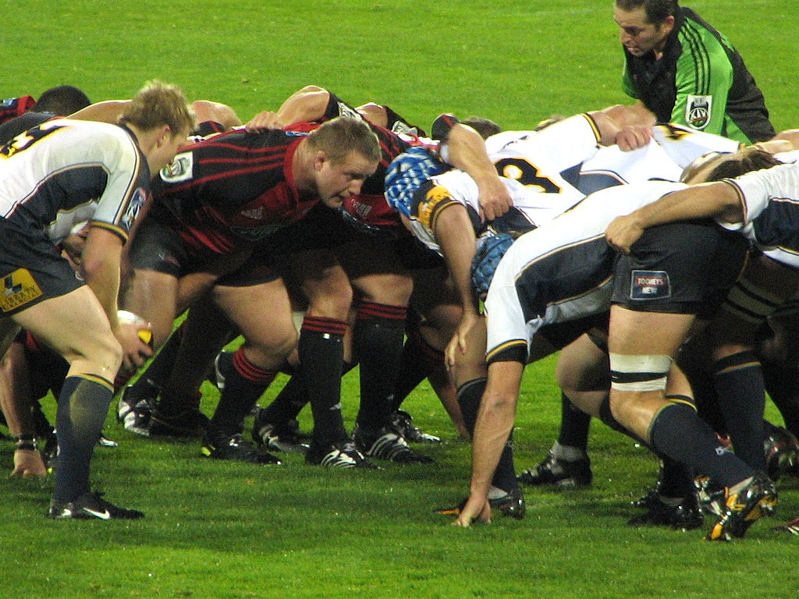
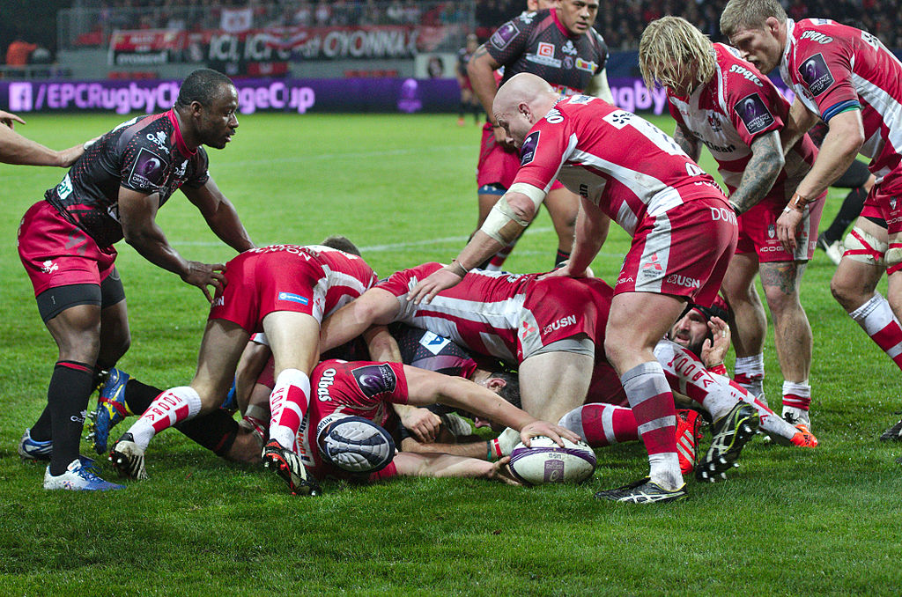

Регбі
Матеріал з Вікіпедії — вільної енциклопедії.
Реґбі (англ. rugby football) — олімпійський вид спорту, спортивна командна гра, в яку грають на прямокутному полі м'ячем овальної форми, різновид футболу.
Зміст
-
правила гри
- мета гри
- основи
- позиції гравців
- гравці сутички
- гравці задньої лінії
- назви позицій
- регбійний словничок
- популярність у світі
- історія
- веб еліс
- розділення футболу
- становлення Регбі
- розвій в регбі
- регбійна інфраструктура
- htu,sqyf cnhernehf
- види гри в овальний м'яч
- регбі в україні
правила гри
Мета гри
Метою гри є приземлення м'яча у заліковому полі (місті) або ж забиття його ногою над перекладиною воріт у межах, позначених двома стійками.
Основи
У реґбі грають руками й ногами. При грі руками заборонено передавати м'яч вперед. Ногами м'яч бити вперед можна.
Гравець, який перебуває перед лінією м'яча вважається поза грою й не може брати в ній участі. Гравцю, який лежить на землі, теж заборонено брати участь у грі. Повалений на землю гравець зобов'язаний якомога швидше випустити м'яч із рук.
Просування гравця з м'ячем можна зупинити, схопивши його двома руками й поваливши на землю. Заборонено захоплювати гравця за шию чи однією рукою. Заборонені підніжки.
При виході м'яча з гри за бічну лінію його вкидають у коридор, який формується із гравців обох команд.
При грі вперед та інших дрібних порушеннях у основному виді регбі (регбі-15) призначається сутичка, в якій м'яч вкидається між двома групами із восьми гравців, і ті намагаються вибороти його, відштовхуючи групу супротивника.
При серйозніших порушеннях (наприклад, офсайді) призначаються карні удари. Особливо груба гра карається вилученням на десять хвилин (жовта картка) чи з гри (червона картка).
У найпоширенішому варіанті (регбі-15) гра складається із двох таймів тривалістю 40 хвилин кожен. Проте, після того, як час тайму вибіг, боротьба не припиняється, доки м'яч не вийде з гри.
« Залікові очки» В основному виді регбі (регбі-15, регбі-юніон) за приземлення м'яча в місті супротивника дається 5 очок й право на спробу реалізації. При успішній реалізації дається ще два очки.
За влучне пробиття карного удару дається 3 очки. Те ж саме стосується влучного удару з відскоку від землі
(дроп-голу).
У регбі-13 за приземлення м'яча в заліковому полі команда отримує 4 очки і право на спробу
реалізації. За успішну реалізацію команда отримує ще два очки.
Позиції гравців
Регбійна команда складається з 15 гравців. На відміну від футболу номери на формі гравців стартового складу завжди відповідають ролі, яку гравець виконує на полі. Для кожної позиції вибираються виконавці, які відповідають їй за будовою тіла, фізичними даними й характером.
На схемі зображені позиції гравців, які вони займають при сутичці й відповідні номери. Регбійна команда поділяється на гравців сутички або форвардів (англ. pack) й гравців задньої лінії.
Гравці сутички
Гравці сутички мають номери з 1-го по 8-й. При розігруванні сутички вони стають у три ряди. У першому ряду — троє: гак (хукер) і два стовпи. За ними, в другому ряду розташовуються два замки. Третій ряд складають два фланкери і номер 8.
Гравці задньої лінії
Півзахисник сутички або скрам-хав вводить м'яч у сутичку й підбирає м'яч із неї. Малий, із швидкими руками й стрімкою думкою. Він визначає напрямок атаки. Грає під номером 9.
Флай-хав розігрує м'яч, здебільшого пробиває дроп-удари. Грає під номером 10.
Два центри — зв'язкова ланка з краями. Грають під номерами 12 і 13.
Два краї — найшвидші гравці в команді. Грають під номерами 11 і 14.
Захисник — він у регбійній команді всього один. Його основна задача — підбирати м'ячі, перекинуті через лінію оборони. Інша задача — рятувати команду при проривах. Швидкий, сильний гравець. Грає під номером 15.
Назви позицій
- лівий стовп
- хукер
- правий стовп
- лівий замок
- правий замок
- лівий фланкер
- правий фланкер
- номер 8
- півзахисник
- флай-хав
- ліве крило
- внутрішній центр
- зовнішній центр
- праве крило
- захисник
Регбійний словничок
Регбі-15 гра, в якій між гравцями команд-супротивників доволі часто відбувається фізичний контакт, в якому задача гравців полягає в тому, щоб відтіснити гравців іншої команди від м'яча. Ці ситуації називаються сутичками, раками і молами.
Сутичка — стандартна ситуація, в якій беруть участь по 8 гравців від кожної команди, розташованих у три лінії. В центрі першої лінії стоїть гак, повиснувши на плечах двох стовпів. В другій лінії — два замки, дужі гравці, що створюють основний тиск, в третій лінії — два фланкери і номер 8. М'яч у сутичку вводить півзахисник сутички, скрам-хав, він же підбирає його тоді, коли той викочується за межі сутички. Вибороти м'яч і відкинути його назад ногою — задача гака. Команда, яка вводить м'яч у сутичку здебільшого має перевагу і здобуває його.
Інша ситуація, рак (англ. ruck), утворюється стихійно, коли гравця з м'ячем валять на землю. Упавши на землю, він повинен випустити м'яч із рук, однак робить це, зазвичай дещо назад. Для того, щоб команда зберегла м'яч в цей момент, партнери повинні вибудувати стіну між м'ячем та супротивником. При цьому принаймні один гравець команди утворює контакт із гравцем супротивника і намагається відтіснити його. Супротивник теж тисне — підібрати м'яч за правилами можна лише тоді, коли він опиниться за стіною із свого боку. Інші гравці теж можуть приєднуватися до раку, але робити це вони можуть тільки ззаду свого гравця, який вступив у контакт. Гравці в раку повинні стояти на ногах. У випадку падіння вони повинні якомога скоріше відкотитися. При утворенні раку всі гравці, що не беруть в ньому участі, повинні вийти з положення офсайду. Гравці в раку не мають права торкатися м'яча руками. М'яч із раку підбирає зазвичай скрам-хав, хоча це не обов'язково.
Ситуація мол виникає тоді, коли утворюється контакт між гравцем і гравцем супротивника, однак вони обидва стоять на ногах і гравець із м'ячем продовжує просуватися вперед, давлячи своєю масою. До молу можуть приєднуватися інші гравці, але тільки ззаду від того гравця своєї команди, який започаткував мол. Мол може бути дуже ефективним для значного просування вперед, оскільки значна кількість гравців чинять тиск на супротивника.
Якщо м'яч залишив поле через бокову лінію, то він повертається у гру частіше всього через коридор . При цьому гравці обох команд розташовуються у колонах поперек поля на відстані одного метра від суперника та від 5 до 15 метрів від боковою лінії. М'яч вкидається точно між гравцями. Для того, щоб впевнено заволодіти м'ячем, двоє гравців в коридорі піднімають третього в момент, коли той стрибає. Такий прийом називається ліфт
Популярність у світі
Регбі популярне в усьому світі, але особливо в країнах Британської співдружності. У певних країнах і областях — це вид спорту номер один. Серед них Нова Зеландія, Південна Африка, Ірландія, Уельс, південь Франції.
Історія
Історичні хроніки доносять до сучасників чимало фактів гри в м'яча у різних кінцях світу та в різні часи. Серед тих країн, де ігри з м'ячем набули масового й вуличного характеру стала Англія XVIII—XIX століть (цей період тепер називають — «народний футбол» Medieval football). Величезні натовпи, без жодних правил, ганяли м'яча по міських вулицях і сільських дорогах: ловили, кидали, штовхали, робили все, щоб загнати на сторону противника. Зазвичай ці «матчі» закінчувалися загальної бійкою тому місцеві урядники намагалися різними засобами унормувати їхнє проведення, а то й скасовували (були часи, коли ганяти м'яча було суворо заборонено). Але, поступово, гра увійшла в більш-менш організовані рамки й міцно утвердилася в англійських навчальних закладах, як один із видів дозвілля та спортивних занять.
Вільям Вебб-Елліс з Регбі
Ігри-сутички народного футболу (Medieval football) в Англії, зазвичай, проводилися в переддень релігійних чи світських свят. Відтак на роковини перемоги під Ватерлоо в містечку Регбі знову було дозволено поганяти м'яча. Саме ця днина стала пам'ятною для історії спорту, адже на полі місцевого коледжу шістнадцятирічний Вільям Вебб-Елліс (William Webb Ellis) схопив м'яча руками та, наперекір тодішнім правилам, кинувся з ним не назад, а до «міста» суперників. Це було порушення правил, але воно й послужило поштовхом до виникнення нової гри[3].
Розділення футболу та регбі
Альберт Пелл, випускник школи містечка Регбі, привіз гру в Кембридж і організував там першу команду. Спочатку правила гри в різних школах відрізнялися. Перші офіційні правила були прийняті в Регбі у 1845 році. У 1848 році були затвердженні Кембридзькі правила. У 1863 році з'явилися офіційні правила гри в футбол. Однак, частина гравців не погодилася з футбольними правилами й вийшла з Футбольної асоціації. Союз футболу Регбі (RFU, англ. Rugby Football Union) утворено 1871 року. Наприкінці 19 століття в регбійній Британії стався розкол у зв'язку зі звинуваченням цілої низки клубів з північної Англії в оплаті гравцям за гру. Північноанглійські шахтарські клуби вийшли з Союзу й утворили власний Північний союз, перейменований з 1901 у Північну регбійну лігу. Спочатку змагання в лізі проводилися за правилами Союзу, але згодом відбулися зміни, які остаточно відокремили регбіліг від класичного регбі.
Регбійна інфраструктура
Зважаючи на суттєві історичні особливості у розвитку та популяризації гри руками в овальний м'яч, відповідно вибудувалася доволі складна (а десятиліттями раніше й доволі суперечлива) спортивна інфраструктура та ієрархія в цьому виді спорту.
Регбійна структура (управління)
Глобальне регулювання регбі-15, регбі-7, як і ряду інших регбійних дисциплін здійснює Міжнародна рада регбі (IRB). Штаб-квартира, заснованої в 1886 році, організації розташована в Дубліні. Основним завданням ради є публікація правил гри і загальний контроль за їх дотриманням. З 2003 року під егідою «IRB» виходить рейтинг національних збірних з регбі-15, редагований щотижня. З 2013 року організація об'єднує 118 національних організацій, 100 з яких мають статус повного/дійсного члена.
Міжнародна рада регбі проводить найбільші міжнародні змагання: чемпіонати світу серед чоловіків і жінок, чемпіонату світу з регбі-7, Світову серію регбі-7, юніорську першість світу, Всесвітній трофея для юніорів, Кубок націй IRB і Тихоокеанський кубок націй. Рада визначає місце проведення кожного з перерахованих турнірів за винятком Світової серії регбі-7 (лише цей турнір проводиться на підставі домовленостей з низкою національних регбійних спілок).
Натомість, так історично склалося, найбільш дієве й організаційне поточне управління регбійним господарством, на регіональному рівні, здійснюють шість організацій:
- Конфедерація африканського регбі (Confederation of African Rugby, CAR);
- Азійський регбійний союз (Asian Rugby Football Union, ARFU);
- Північноамериканська і карибська регбійний асоціація (North American and Caribbean Rugby Association, NACRA);
- Регбі Європи (Rugby Europe) — колишня Міжнародна федерація любительського регбі — Європейська асоціація регбі (Fédération Internationale de Rugby Amateur — Association Européenne de Rugby, FIRA-AER);
- Федерація регбійних спілок Океанії (Federation of Oceania Rugby Unions, FORU);
- Південноамериканська конфедерація регбі (Confederación Sudamericana de Rugby, CONSUR).
Оскільки Австралія, Нова Зеландія і ПАР спільно організовують ряд змагань (Чемпіонат Регбі, Супер Регбі), керівництво їх загальними проектами здійснює організація «SANZAR». Аргентина, недавно приєдналася до числа найсильніших регбійних держав Південної півкулі і не має на даний момент представництва в SANZAR, та незабаром буде інтегрована в їх загальну структуру.
Контроль за процесом розвитку регбі в рамках окремих держав або їх частин здійснюють національні регбійні союзи, які співпрацюють з «IRB». Серед 26 експертів ради «IRB»: 16 представляють Шотландію, Ірландію, Уельс, Англію, Австралію, Нову Зеландію, ПАР і Францію (кожен з цих національних союзів делегує до ради по два учасника), по одному представнику мають Аргентина, Канада, Італія та Японія, а решту 6 місць залишилися за делегатами регіональних регбійних асоціацій (згідно щорічної їх ротації).
Види гри в овальний м'яч
Найпоширенішим різновидом регбі є гра за правилами Союзу регбі (англ. Rugby Union), яку й називають регбі, або ще регбі-15 (за кількістю гравців на полі) — щоб відрізнити від інших різновидів. Грається двома командами по п'ятнадцять гравців у кожній.
Гра за правилами регбійної ліги грається двома командами по 13 гравців і називається регбіліг або регбі-13.
Дуже поширена гра 7 на 7, регбі-7 яка грається майже за тими ж правилами, що й регбі-15, але тільки з сімома гравцями в кожній команді. У 2009 році регбі-7 було включено в програму Олімпійських ігор. Цей різновид регбі дебютував на Олімпіаді в Ріо-де-Жанейро у 2016 році. Турніри з регбі-7 проводяться обома федераціями, однак статус олімпійського виду спорту має версія Міжнародної ради регбі.
Більшість різновидів гри в овальний м'яч ведуться двома загальнорегбійними об'єднаннями:
- Міжнародна рада регбі забезпечує взаємодію спортсменів і організацій у Регбі-15, Американ-флег, Міні-регбі, Регбі-7, Снігове регбі, Тег-регбі, тач-регбі і Регбі-10.
- Федерація регбіліг відповідальна за проведення змагань по Регбі-ліг, Мастерс-регбіліг (версії гри для літніх людей), Мініліг, Модліг, Регбі-9, Регбі-7, Тег-регбі, Тач-регбі і Колясочне регбі.
Регбі в Україні
В Україну регбі потрапило з Британії. Зазвичай це були виставкові матчі в портових містах між ватагами моряків із іноземних суден та за участю місцевих молодиків чи студентів. Саме про одну таку зустріч в місті Одеса в 1908 році і згадував генерал-лейтенант Микола Біязі. Натомість перша офіційна гра мала місце уже у Львові 9 липня 1922 року на полі Львівського спортивного клубу «Погонь». За словами польського письменника й спортивного функціонера Рудольфа Вацека це: «Вперше у Польщі розіграно зустріч у м'яча ручно-ножного, так званого Регбі». До середини XX століття регбі на теренах України так і не перейшов рівень аматорства й виставкових ігор.
Лише по 2-й світовій війні регбі змогло утвердитися в Україні, а з 1960-х років уже почали існувати постійні регбійні команди, які брали участь в союзній регбійні першості. Здебільшого це були команди, утворені на базі студентських спортивних клубів і в спортивних товариства Києва, Дніпропетровська та Одеси (така особливість, вузівського спорту, закріпилася й надалі за цим видом в Україні; лише в період Незалежності команди почали переходити на рівень професіоналізму). За часи Радянського Союзу українські команди брали участь в усіх спортивних змаганнях та делегували своїх гравців до різних збірних команд. Так у чемпіонатах СРСР з регбі виступали щорічно 5-6 команд з України (у вищій і першій лігах), які домагалися певних успіхів. Найтитулованіша українська команда, тих часів, київський «Авіатор» в 1978 році стала чемпіоном СРСР, чотири рази рази була другою, тричі завойовувала бронзові медалі й тричі володіли Кубком СРСР.
Доба Незалежності України ознаменувала новий сплеск спорту і його розвиток. Так 16 грудня 1991 року була заснована Федерація регбі України (в червні 1992 року стала колективним членом FIRA-AER, а в жовтні того ж року — IRB). Починаючи з 1993 року збірні команди України беруть участь у відбіркових матчах чемпіонату Європи і кваліфікаційних етапах до Кубка світу. Національна збірна України з регбі бере участь у Європейському кубку націй, де грає в дивізіоні 1A (станом на 2010—2012 роки). У світовому рейтингу регбійних збірних Україна займає 29 місце (станом на 7 лютого 2011). Найбільших успіхів за останні роки досягала збірна України з регбі-7: на чемпіонаті Європи-2002 українські регбісти зайняли шосте місце, а в 2003-му були вже п'ятими.
Федерація регбі України й опікується проведенням всеукраїнських турнірів з регбі на теренах України. Змагання проходять у трьох лігах: Суперлізі, Вищій лізі та Першій лізі. За півстолітню історію регбі поширилося із 3-4 міст майже по всій Україні, культивується в дванадцяти областях України та Криму: Харківській, Львівській, Одеській, Хмельницькій, Рівненській, Тернопільській, Івано-Франківській, Донецькій, Дніпропетровській, Черкаській, Полтавській, Київській, а також у Києві та Севастополі.